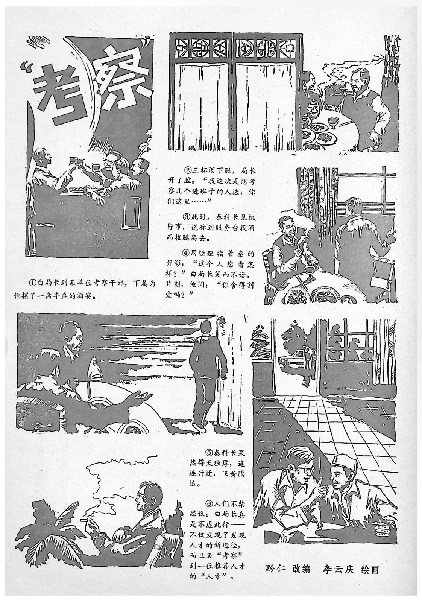

李云庆绘画；黔仁改编 《人事》1986年第11期（总第14期），封二
"考察"
"Inspection"
- Panel text
- 白局长到某单位考察干部，下属为他摆了一席丰盛的酒宴。
Bureau Chief Bai came to a work unit to evaluate its cadres, and his subordinates laid on a lavish banquet for him. - 三杯酒下肚，局长开了腔：“我这次是想考察几个进班子的人选，你们这里……”
Three cups of liquor down, the bureau chief spoke up: “This time I'm looking to evaluate a few candidates for the leadership group. Here at your unit…” - 此时，秦科长见机行事，谎称到服务台找酒而拔腿离去。
At this, Section Chief Qin seized his chance: claiming he was going to the service desk for more liquor, he got up and left. - 周经理指着秦的背影：“这个人您看怎样？”白局长笑而不语。片刻，他问：“你舍得割爱吗？”
Manager Zhou pointed at Qin's departing back: “What do you think of this man?” Bureau Chief Bai smiled and said nothing. After a moment he asked: “Could you bear to part with him?” - 秦科长果然得天独厚，连连升迁，飞黄腾达。
Sure enough, Section Chief Qin was favoured by fortune: promotion followed promotion, and his career soared. - 人们不禁思议：白局长真是不虚此行——不仅发现了发现人才的新途径，而且又“考察”到一位推荐人才的“人才”。
People could not help reflecting: Bureau Chief Bai's trip had truly been worthwhile — he had not only discovered a new way of discovering talent, but had also “evaluated” a “talent” for recommending talent.
- 白局长到某单位考察干部，下属为他摆了一席丰盛的酒宴。
- Description
- Six-panel picture story: Bureau Chief Bai comes to 'inspect' cadres for promotion and is banqueted; the section chief who slips out to fetch more wine is singled out and rises rapidly.
- Note
- 考察 ('inspection', 'investigation') was the formal stage of cadre evaluation before promotion.
- Artists
- Li Yunqing 李云庆 (drawn); Qian Ren 黔仁 (adapted)
- Published in
- 《人事》1986年第11期（总第14期）, inside front cover
- Themes
- Gifts and banquets · Promotion · Picture stories (连环画)

Cite
Li Yunqing and Qian Ren, “"考察"” ["Inspection"], Renshi (Personnel) 《人事》, 1986, no. 11, inside front cover.